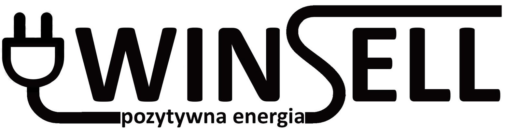

Doświadczenie

Winsell Sp. z o.o.
Elektromonter (2025)
Instalacja systemów awaryjnych i ewakuacyjnych.

LG Energy Solution
Automatyk (2024)
Programowanie PLC Mitsubishi, konfiguracja HMI Pro-face, modyfikacje systemów automatyki.
Rudolf Fritz/R+S
Elektryk (2023)
Montaż instalacji elektrycznych w budynkach biurowych i mieszkalnych.
BMS
Obsługa maszyn specjalnych (2020)
Naprawa i nadzór nad maszynami pakującymi.
CH4
Pomocnik automatyka (2019)
Naprawa silników, asystowanie przy serwisie automatyki.